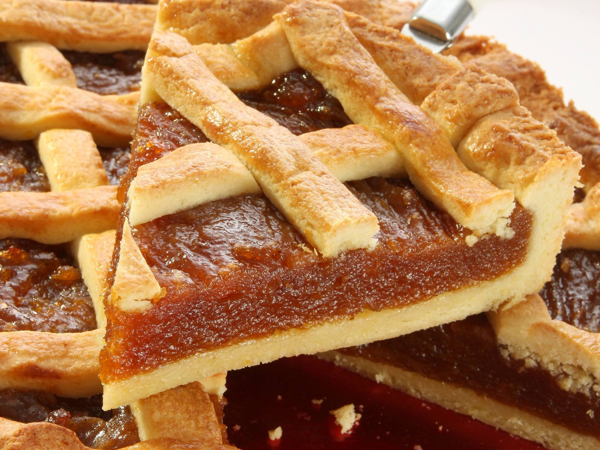

Pasta Frola

Pasta Frola de Dulce de Membrillo Quince Tart
Pasta frola is a wonderful dessert made with a cookie-like shortbread
crust and dulce de membrillo (quince paste) filling. Pasta frola is
another example of the influence of Italian food on Argentinian and
Uruguayan cuisine—its name comes from the Italian word for the shortbread
crust, pasta frolla, that is used to make Italian crostate (jam pies). The
filling has evolved to match South American tastes: usually quince paste
or dulce de leche.
There's a saying in Argentina: Life is not a pasta frola. (La vida no es
una pasta frola).
Ingredients
- 2 cups all-purpose flour
- 1 tablespoon baking powder
- 1/2 teaspoon salt
- 1/2 cup sugar
- 1/2 cup (4-ounces) cold unsalted butter
- 1 teaspoon pure vanilla extract
- 1 large egg
- 1 large egg yolk
- 2 tablespoons milk
- 1 cup homemade or store-bought quince paste
- 1/4 cup pineapple preserves, optional
- 1/4 cup seedless raspberry jam, optional
Steps
-
Mix the dry ingredients (flour, salt, baking powder, and sugar) together
in a medium bowl
-
Cut the butter into pieces, and mix butter into dry ingredients using a
pastry cutter or 2 knives, until well blended
-
Stir egg, egg yolk and milk together and add to flour mixture, blending
gently with a fork until dough comes together. Knead a couple of times
to just barely mix the dough, which should not be too crumbly nor too
wet. If needed, add an extra tablespoon or so of flour or milk
- Wrap dough in plastic wrap and chill for at least 30 minutes
-
Add dulce de membrillo (and pineapple preserves and raspberry jam, if
using) to a small pot, with 1 to 2 tablespoons of water
-
Heat over low heat, stirring frequently until mixture has melted enough
to be smooth and have a spreadable consistency (add a little more water
if necessary.) Remove from heat and let cool slightly
-
Preheat oven to 350 F. Butter a 9-inch tart pan with a removable bottom
-
Roll out about 3/4 of the dough on a floured surface into a circle large
enough to line the bottom and sides of the tart pan. Place the dough in
the pan. Spread the filling evenly over the dough
-
Roll the remaining dough into a circle, and cut thin strips of dough,
using them to make a lattice pattern over the top of the tart
-
Brush the tart lightly with an egg wash (1 egg thinned with 1 tablespoon
water), and bake until golden brown (about 30 minutes)
-
Sprinkle with confectioners' sugar if desired, or brush with an apricot
glaze. Serve warm or at room temperature